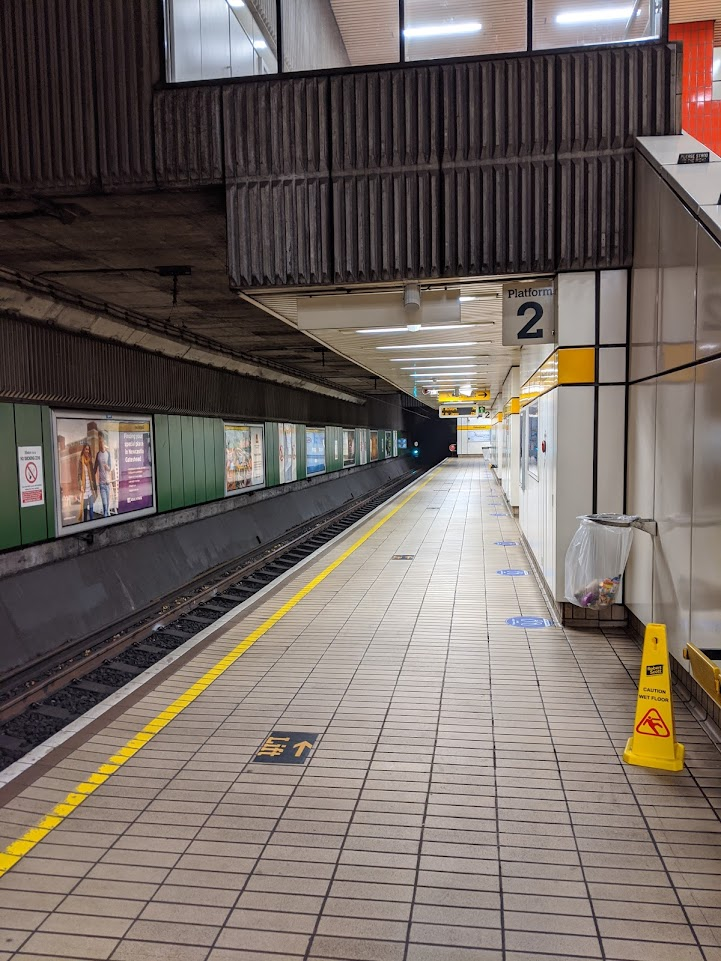
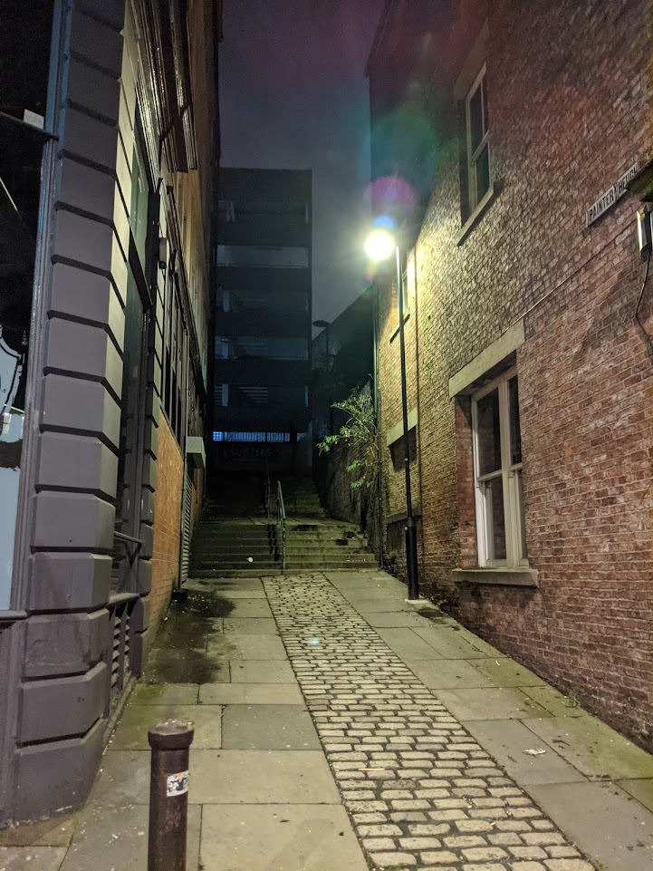
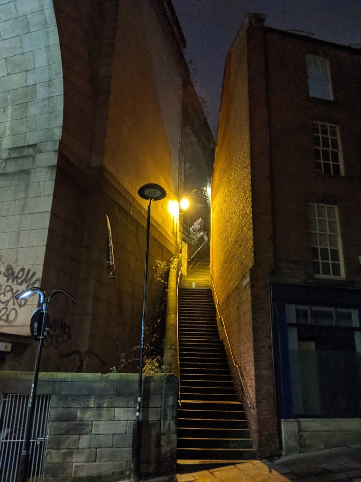
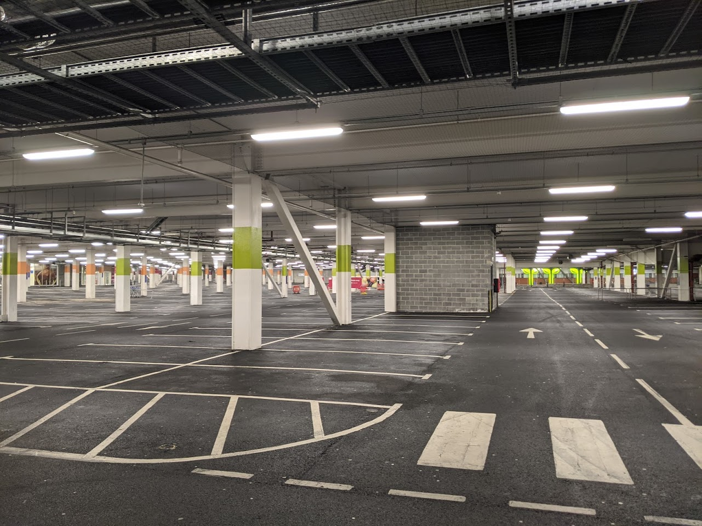
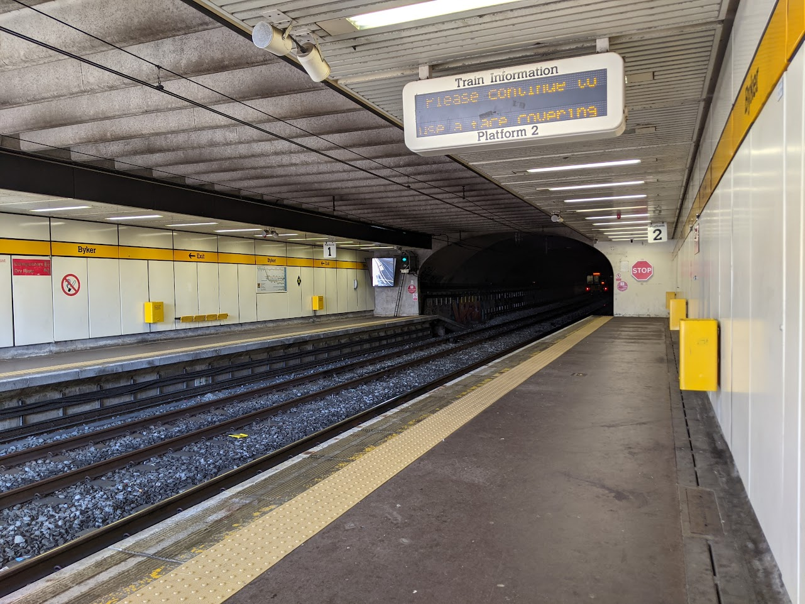
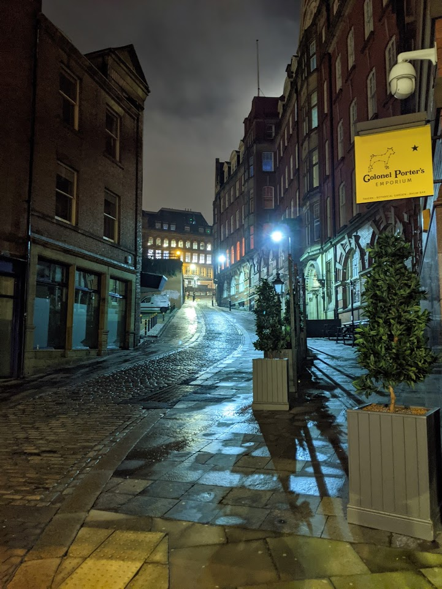
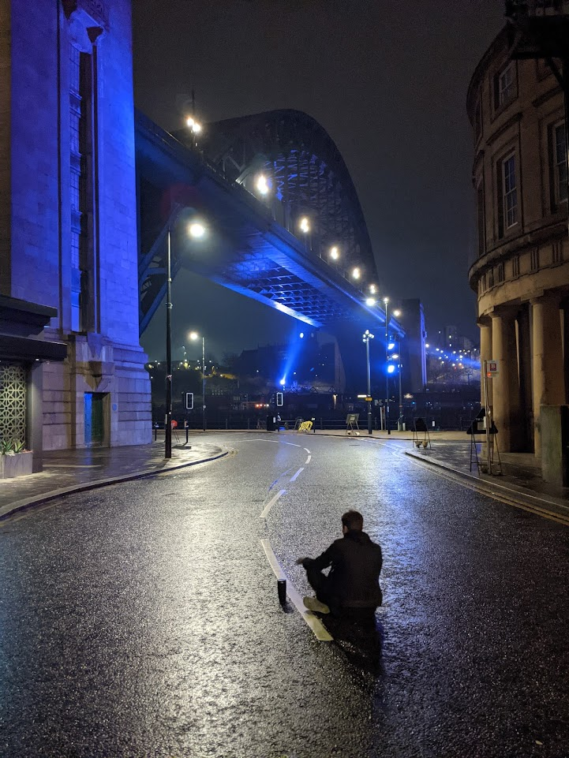
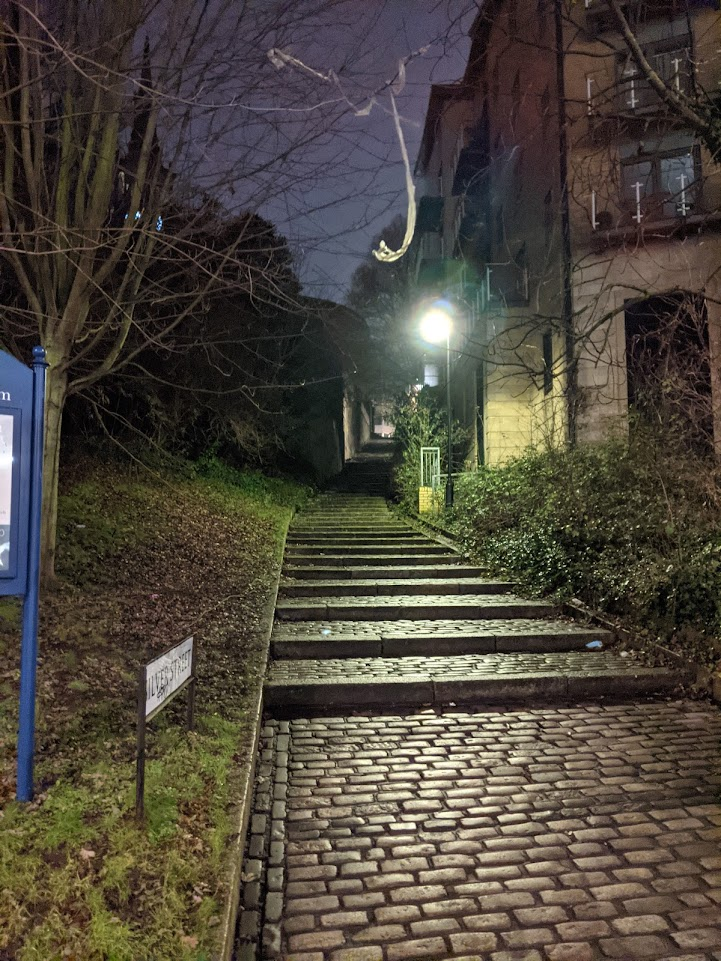

During the coronavirus pandemic, through a mixture of legitimate reasons to travel and late-night excursions, I was able to capture some scenes of desertion and absence throughout Newcastle-upon-Tyne as a result of the coronavirus lockdown in England. Photographs of abandoned city centres and empty metros serve as a jarring demonstration of the impact of the pandemic.
       